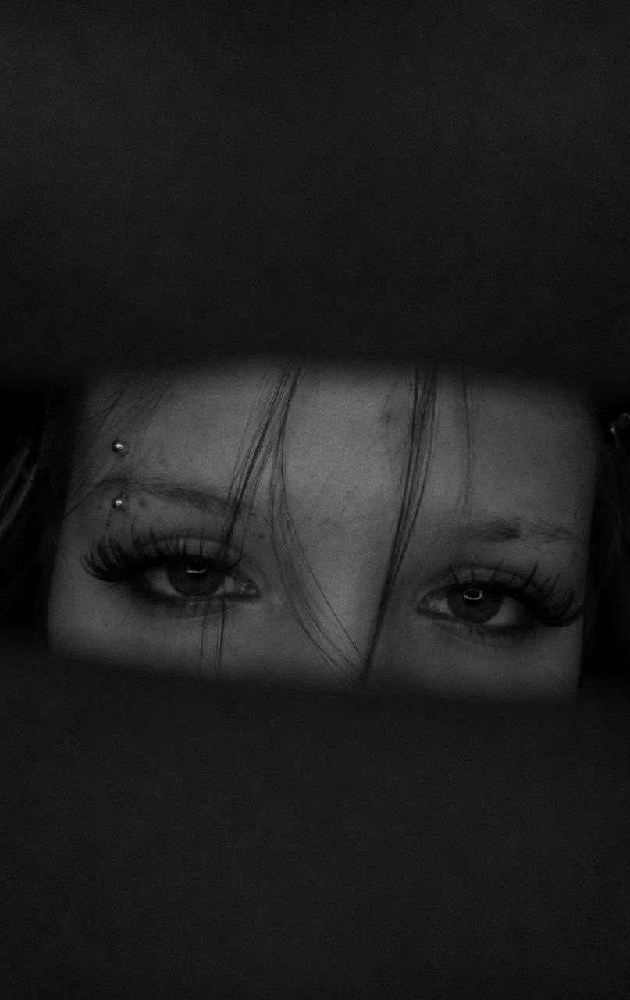
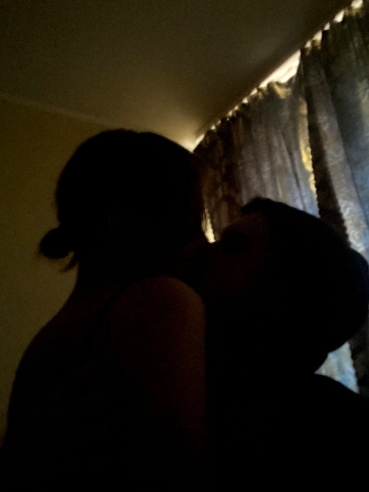

Фотоархив / 01—08

если коротко
Отношения - это не просто чувства. Это когда двое стараются.
Я сделал это место, чтобы напомнить: у нас есть много нежности, смешных кадров, объятий, разговоров и причин не сдаваться друг на друга.

самый красивый взглядто, в чём я теряюсь
Твои невероятные зелёные глаза
В них столько оттенков: нежность, искры, спокойствие и целый мир, который мне хочется узнавать всю жизнь.
Они меняются вместе с твоим настроением: становятся ярче, когда ты смеёшься, и особенно глубокими, когда ты о чём-то думаешь. Но для меня они всегда самые красивые. Один твой взгляд умеет сказать больше, чем сотня слов, успокоить, вдохновить и снова напомнить, как сильно я тебя люблю.
Зелёный теперь мой любимый цвет.
самый родной взгляд
то, в чём я нахожу спокойствие
Твои тёплые карие глаза
В них столько оттенков: нежность, искры, спокойствие и целый мир, который мне хочется узнавать всю жизнь.
Они меняются вместе с твоим настроением: становятся ярче, когда ты смеёшься, и особенно глубокими, когда ты о чём-то думаешь. Но для меня они всегда самые родные. Один твой взгляд умеет сказать больше, чем сотня слов, успокоить, согреть и снова напомнить, как сильно я тебя люблю.
Карий теперь мой любимый цвет.
наш курс
Что я хочу делать для нас
Слушать внимательнее
Не перебивать, не угадывать за тебя, а правда понимать, что ты чувствуешь.
Беречь спокойствие
Говорить мягче, даже когда сложно, и выбирать нас вместо обид.
Замечать хорошее
Не привыкать к твоей заботе, красоте и теплу, а благодарить за это чаще.
Расти рядом
Становиться лучше не на словах, а поступками, которые ты можешь почувствовать.

важное
Я хочу быть человеком, с которым тебе не страшно быть настоящей.
С улыбкой, усталостью, капризами, мечтами, тишиной и всем, что у тебя внутри. Мне хочется, чтобы ты знала: любовь - это не только красивые слова, а ежедневная забота.
наш путь
Пусть у нас будет больше таких дней
Когда важно не победить в споре, а понять друг друга.
Когда слова закончились, но рядом все равно становится легче.
Когда мы строим не идеальную картинку, а живую настоящую историю.
куда бы ни вела дорога
В будущее вместе
Мне нравится этот кадр: ты тянешься к небу, а впереди целый город и ещё столько всего неизвестного. Я хочу быть рядом во всех наших будущих историях: поддерживать твои мечты, радоваться твоим победам и превращать обычные дни в те, которые хочется сохранить.
ты моё любимое «впереди»моменты
Кадры, в которых уже есть целая история


живой момент
Видео, которое можно пересматривать со звуком
Иногда один короткий фрагмент хранит больше, чем длинный текст: настроение, голос, движение и ощущение, что это было по-настоящему.
чтобы не забывать
Маленькие правила для большой любви
Не строгий список, а четыре вещи, которые помогают нам оставаться ближе в обычные и непростые дни.

Даже если трудно, потому что молчание не должно становиться стеной.
Мириться, пока кровать целая.
Иногда простая прогулка или чай вместе лечат лучше любых громких обещаний.
Каждый день, спокойно и по-настоящему.
разговоры о важном
Любить не только когда легко
Большой блог о ссорах, доверии, ревности, быте, поддержке и личных границах. С понятными шагами, готовыми фразами и идеями, которые помогают снова услышать друг друга.
спокойный конфликт
поддержка
доверие
границы
Открыть блог
личное
Настя, спасибо, что ты есть
Я не хочу, чтобы этот сайт был просто красивой страницей. Пусть он будет напоминанием мне: любовь нужно подтверждать вниманием, терпением, поступками и нежностью.
Я хочу, чтобы у нас получалось. Чтобы мы росли, разговаривали, смеялись, обнимались крепче после сложных дней и берегли то, что между нами.
Я собрал их все в одном большом письме для тебя.